Unai Estavillo Bonet
Desenvolupador de coses en temps lliure i enamorat de la lectura i els videojocs. També ensenyo programació de tant en tant.
Resum Professional
- Professor de Codelearn Vic 2019-2021
- Voluntari Festival Nits de Cinema Oriental 2017-2019
Reconeixements
- Guanyador al premi als valors FLL de Vic
- Guanyador al premi millor treball FLL de Vic
- Expositor al mercat de Tecnologia i al mercat Tech Days
- 1ra Posició a la Game Jam Summit
- 23è Joc més valorat a la GMTK gamejam (8k participants)
- 1r Premi al treball de recerca STM
Behance

